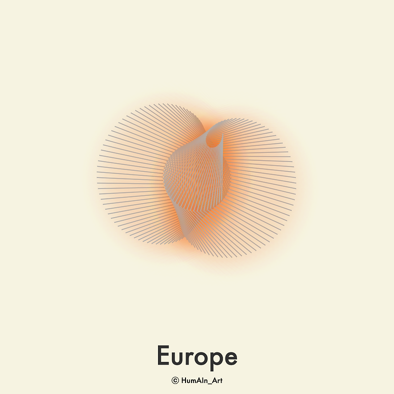

Data from all 27 countries in the EU. What happens if you transform that into art or sound? That we are trying to find out in this project.
For the sound I am using a visual programming interface called Pure Data.
Land (size)
Happiness
Age
Population
CO2 emission